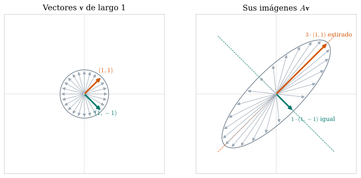
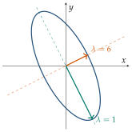
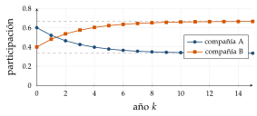
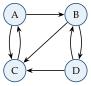

Valores y vectores propios
- entender qué es un vector propio: una dirección que la matriz solo estira o encoge;
- calcular valores propios con el polinomio característico y vectores propios con Gauss;
- diagonalizar una matriz y usar la diagonalización para calcular potencias;
- diagonalizar matrices simétricas con bases ortonormales;
- aplicar todo esto a procesos que evolucionan en el tiempo: migraciones, poblaciones, buscadores web.
Una matriz cualquiera “revuelve” los vectores: los gira, los estira y los inclina a la vez. Pero casi siempre hay unas pocas direcciones privilegiadas en las que la matriz actúa de la forma más simple posible: solo multiplica por un número. Esas direcciones, los vectores propios, son como el “ADN” de la matriz. Con ellos Google ordenó la web, los ecólogos predicen poblaciones y los ingenieros evitan que los puentes entren en resonancia.
10.1 Conceptos
10.1.1 Definición e idea geométrica
Sea \(A\) una matriz cuadrada de \(n\times n\). Un número \(\lambda\) es un valor propio de \(A\) si existe un vector \(\vv\neq\cero\) tal que
Ese \(\vv\) es un vector propio asociado a \(\lambda\). (También se dicen autovalor y autovector, o eigenvalor y eigenvector.)

Un vector propio no cambia de dirección al aplicarle \(A\) (a lo sumo se invierte); el valor propio dice por cuánto se multiplica su largo.
Si \(\vv\) es vector propio, también lo es cualquier múltiplo \(c\vv\) con \(c\neq0\): lo importante es la dirección.
10.1.2 Cómo encontrar los valores propios
\(A\vv=\lambda\vv\) se puede escribir \((A-\lambda I)\vv=\cero\). Queremos soluciones no nulas de este sistema homogéneo, y eso ocurre exactamente cuando la matriz \(A-\lambda I\) no es invertible, es decir, cuando su determinante es cero (Capítulo 5).
Los valores propios de \(A\) son las soluciones de la ecuación característica
El lado izquierdo es un polinomio de grado \(n\) en \(\lambda\), el polinomio característico. Para cada valor propio \(\lambda\), los vectores propios (junto con el cero) forman el espacio propio \(E_\lambda=\nul(A-\lambda I)\).
Para una matriz de \(2\times2\), \(A=\begin{pmatrix}a&b\\c&d\end{pmatrix}\), el polinomio es
donde la traza \(\traza(A)\) es la suma de la diagonal.
- Si \(A\) es triangular (o diagonal), sus valores propios son los números de la diagonal.
- La suma de los valores propios es la traza de \(A\) y su producto es \(\det A\) (contando repeticiones).
- \(\lambda=0\) es valor propio si y solo si \(A\) no es invertible.
- Si \(A\vv=\lambda\vv\), entonces \(A^k\vv=\lambda^k\vv\); y si \(A\) es invertible, \(A\inv\vv=\frac1\lambda\vv\).
- Una matriz real puede no tener valores propios reales: la rotación en \(90^\circ\) tiene polinomio \(\lambda^2+1\), porque ninguna dirección queda igual al girar.
10.1.3 Diagonalización
Una matriz \(A\) de \(n\times n\) es diagonalizable si se puede escribir
con \(D\) diagonal y \(P\) invertible. En ese caso, las columnas de \(P\) son vectores propios de \(A\) y la diagonal de \(D\) contiene los valores propios correspondientes, en el mismo orden.
\(A\) es diagonalizable si y solo si tiene \(n\) vectores propios linealmente independientes (una base de vectores propios). En particular, si \(A\) tiene \(n\) valores propios distintos, es diagonalizable.
Si un valor propio se repite, puede faltar algún vector propio. Por ejemplo, \(\begin{pmatrix}2&1\\0&2\end{pmatrix}\) tiene \(\lambda=2\) doble, pero su espacio propio es solo la recta \(\gen\{(1,0)\}\): no hay dos direcciones independientes y la matriz no es diagonalizable.
En el lenguaje del Capítulo 8: diagonalizar es encontrar una base (la de vectores propios) en la que la transformación es simplemente “estirar cada eje por su valor propio”.
10.1.4 Potencias de matrices
Si \(A=PDP\inv\), entonces
En efecto, \(A^2=PDP\inv PDP\inv=PD^2P\inv\), y así sucesivamente: los \(P\inv P\) intermedios se cancelan. Calcular \(A^{100}\) se reduce a elevar números a la 100.
10.1.5 Matrices simétricas
Si \(A\) es simétrica (\(A\T=A\)), entonces:
- todos sus valores propios son reales;
- vectores propios de valores propios distintos son ortogonales;
- \(A\) se diagonaliza con una matriz ortogonal: \(A=QDQ\T\), con \(Q\T=Q\inv\).
Las matrices simétricas aparecen en todas partes: en física (inercia, tensiones), en estadística (matrices de covarianza) y en geometría.
10.1.6 Formas cuadráticas
Una expresión como \(5x^2+4xy+2y^2\) se llama forma cuadrática y se escribe con una matriz simétrica:
(El coeficiente de \(xy\) se reparte en mitades fuera de la diagonal.) Al cambiar a la base ortonormal de vectores propios desaparece el término \(xy\):
Si todos los valores propios son positivos, la forma es definida positiva y la curva \(\vx\T A\vx=c>0\) es una elipse cuyos ejes son las direcciones propias; si tienen signos distintos, es una hipérbola.

Los valores propios de una matriz de \(3\times3\) son \(2\), \(-1\) y \(3\). ¿Cuánto valen su determinante y su traza? ¿Es invertible?
Ver respuesta
10.2 Cómo utilizar los conceptos
- Escribe \(A-\lambda I\) (resta \(\lambda\) a cada número de la diagonal).
- Calcula \(\det(A-\lambda I)\) y factoriza el polinomio. Sus raíces son los valores propios.
- Para cada \(\lambda\), resuelve el sistema homogéneo \((A-\lambda I)\vv=\cero\) con Gauss. Al escalonar debe aparecer al menos una fila de ceros; si no aparece, el valor de \(\lambda\) está mal calculado.
- Escribe una base del espacio propio. Comprueba con \(A\vv=\lambda\vv\).
- Encuentra todos los valores propios y una base de cada espacio propio.
- Si en total tienes \(n\) vectores propios independientes, ponlos como columnas de \(P\); si no, \(A\) no es diagonalizable.
- Escribe \(D\) con los valores propios en el mismo orden que las columnas de \(P\).
- Calcula \(P\inv\) y comprueba \(AP=PD\) (más fácil que calcular \(PDP\inv\)).
- Para potencias: \(A^k=PD^kP\inv\).
- Calcula valores y vectores propios como siempre.
- Normaliza cada vector propio (divide por su norma). Si un valor propio se repite, aplica Gram-Schmidt dentro de su espacio propio.
- \(Q\) tiene esos vectores unitarios como columnas y \(A=QDQ\T\).
- Aceptar \(\vv=\cero\) como vector propio: por definición no lo es (aunque \(\lambda=0\) sí puede ser valor propio).
- Calcular \(\det(A)-\lambda\) en vez de \(\det(A-\lambda I)\).
- Poner los valores propios en \(D\) en un orden distinto al de los vectores propios en \(P\).
- Creer que toda matriz es diagonalizable: falla cuando faltan vectores propios.
10.3 Ejemplos resueltos
Para \(A=\begin{pmatrix}2&1\\1&2\end{pmatrix}\), ¿son vectores propios \(\vv=(1,1)\) y \(\vw=(1,2)\)?
Solución. \(A\vv=(3,3)=3\vv\): sí, con \(\lambda=3\). \(A\vw=(4,5)\), que no es múltiplo de \((1,2)\): no es vector propio.
Encuentra los valores y vectores propios de \(A=\begin{pmatrix}4&1\\2&3\end{pmatrix}\).
Solución. \(\det(A-\lambda I)=(4-\lambda)(3-\lambda)-2=\lambda^2-7\lambda+10=(\lambda-5)(\lambda-2)\). Valores propios: \(5\) y \(2\) (su suma es la traza \(7\) y su producto, \(\det A=10\)).
\(\lambda=5\): \(A-5I=\begin{pmatrix}-1&1\\2&-2\end{pmatrix}\), ecuación \(-x+y=0\): \(\vv_1=(1,1)\).
\(\lambda=2\): \(A-2I=\begin{pmatrix}2&1\\2&1\end{pmatrix}\), ecuación \(2x+y=0\): \(\vv_2=(1,-2)\).
Comprobación: \(A(1,-2)=(2,-4)=2(1,-2)\). ✓
Encuentra los valores y vectores propios de \(A=\begin{pmatrix}2&0&0\\1&3&0\\4&-1&1\end{pmatrix}\).
Solución. Es triangular: los valores propios son \(2\), \(3\) y \(1\). Resolviendo \((A-\lambda I)\vv=\cero\) en cada caso:
Por ejemplo, \(A(1,-1,5)=(2,\ 1-3,\ 4+1+5)=(2,-2,10)=2(1,-1,5)\). ✓
Diagonaliza \(A=\begin{pmatrix}4&1\\2&3\end{pmatrix}\) y calcula \(A^3\).
Solución. Con el Ejemplo 10.2: \(P=\begin{pmatrix}1&1\\1&-2\end{pmatrix}\), \(D=\begin{pmatrix}5&0\\0&2\end{pmatrix}\), \(P\inv=\frac13\begin{pmatrix}2&1\\1&-1\end{pmatrix}\). Entonces
Diagonaliza ortogonalmente \(A=\begin{pmatrix}5&2\\2&2\end{pmatrix}\).
Solución. \(\lambda^2-7\lambda+6=(\lambda-6)(\lambda-1)\). Para \(\lambda=6\): \(\vv_1=(2,1)\); para \(\lambda=1\): \(\vv_2=(1,-2)\). Son ortogonales (\(2-2=0\)), como asegura el teorema espectral. Normalizando (norma \(\sqrt5\)):
Esta es la matriz de la forma cuadrática de la Figura 10.2.
Muestra que la rotación \(R=\begin{pmatrix}0&-1\\1&0\end{pmatrix}\) no tiene valores propios reales.
Solución. \(\det(R-\lambda I)=\lambda^2+1\), que no se anula para ningún \(\lambda\) real. Geométricamente: al girar \(90^\circ\), ningún vector conserva su dirección.
10.4 Aplicaciones en la vida real
En la Aplicación 4.2, la matriz de transición entre dos compañías era \(P=\begin{pmatrix}0.8&0.1\\0.2&0.9\end{pmatrix}\). Sus valores propios son \(1\) y \(0.7\), con vectores propios \((1,2)\) y \((1,-1)\). Escribiendo el estado inicial en esa base, \(\vx_0=(0.6,0.4)=\tfrac13(1,2)+\tfrac{4}{15}(1,-1)\), resulta
porque \((0.7)^k\to0\). El estado de equilibrio es el vector propio de \(\lambda=1\) con componentes que suman 1.


En 1998, los fundadores de Google propusieron medir la importancia de una página según cuántas páginas importantes la enlazan. Si un “navegante al azar” sigue los enlaces, la fracción del tiempo que pasa en cada página es el vector propio de \(\lambda=1\) de la matriz de enlaces. Para esta mini-web:
A y C son las más importantes (cada una con \(1/3\)), luego B y por último D. El Google real resolvía este problema con miles de millones de páginas.
Un biólogo divide una población de aves en juveniles (\(j\)) y adultas (\(a\)). Cada adulta produce en promedio 3 crías por temporada; la mitad de las juveniles sobrevive y pasa a adulta, y la mitad de las adultas sobrevive:
\(\det(L-\lambda I)=\lambda^2-0.5\lambda-1.5=(\lambda-1.5)(\lambda+1)\). El valor propio dominante, \(1.5\), dice que a largo plazo la población crece un 50 % por temporada, y su vector propio \((2,1)\) dice que habrá 2 juveniles por cada adulta. Si el valor dominante fuera menor que 1, la especie se extinguiría: así se evalúan planes de conservación.
La sucesión \(1,1,2,3,5,8,13,\dots\) cumple \(F_{n+1}=F_n+F_{n-1}\), es decir, \(\begin{pmatrix}F_{n+1}\\F_n\end{pmatrix}=\begin{pmatrix}1&1\\1&0\end{pmatrix}\begin{pmatrix}F_n\\F_{n-1}\end{pmatrix}\). Los valores propios de esa matriz son \(\varphi=\frac{1+\sqrt5}{2}\approx1.618\) (la razón áurea) y \(\psi=\frac{1-\sqrt5}{2}\approx-0.618\). Como \(\abs{\psi}<1\), a la larga domina \(\varphi\), y por eso \(F_{n+1}/F_n\to\varphi\): por ejemplo, \(89/55\approx1.6182\). Diagonalizando se obtiene incluso la fórmula exacta \(F_n=\frac{\varphi^n-\psi^n}{\sqrt5}\).
En estadística, la variabilidad conjunta de dos variables (por ejemplo, estatura y peso) se resume en una matriz simétrica, la matriz de covarianza. Si es \(\begin{pmatrix}5&2\\2&2\end{pmatrix}\), sus valores propios \(6\) y \(1\) indican que la dirección propia \((2,1)\) concentra \(\frac{6}{6+1}\approx0.86\), es decir, el 86 % de la variabilidad. Este método, el análisis de componentes principales, se usa para reducir datos con cientos de variables a unas pocas, por ejemplo en reconocimiento facial.
10.5 Ejercicios de práctica
- 10.1Para \(A=\begin{pmatrix}3&1\\0&2\end{pmatrix}\), decide si son vectores propios y, si lo son, indica el valor propio: a) \((1,0)\) b) \((1,-1)\) c) \((1,1)\).Ver solución
- 10.2Escribe, sin hacer cálculos, los valores propios de \(\begin{pmatrix}2&5&-1\\0&-3&4\\0&0&7\end{pmatrix}\).Ver solución
- 10.3Encuentra el polinomio característico y los valores propios: a) \(\begin{pmatrix}1&2\\2&1\end{pmatrix}\) b) \(\begin{pmatrix}5&-2\\1&2\end{pmatrix}\) c) \(\begin{pmatrix}0&1\\-1&0\end{pmatrix}\)Ver solución
- 10.4Una matriz \(A\) de \(3\times3\) tiene valores propios \(2\), \(-1\) y \(3\). Calcula \(\det A\), \(\traza A\) y los valores propios de \(A^2\), de \(A\inv\) y de \(A+2I\).Ver solución
- 10.5Encuentra los vectores propios de \(\begin{pmatrix}1&2\\2&1\end{pmatrix}\).Ver solución
- 10.6¿Son \((1,2,1)\) y \((1,0,-1)\) vectores propios de \(\begin{pmatrix}2&1&0\\1&2&1\\0&1&2\end{pmatrix}\)?Ver solución
- 10.7Encuentra los valores y vectores propios de \(A=\begin{pmatrix}5&-2\\1&2\end{pmatrix}\).Ver solución
- 10.8Diagonaliza la matriz del ejercicio anterior: encuentra \(P\) y \(D\) y comprueba que \(P\inv AP=D\).Ver solución
- 10.9Usa la diagonalización para calcular \(A^5\) con \(A=\begin{pmatrix}1&2\\2&1\end{pmatrix}\).Ver solución
- 10.10¿Son diagonalizables? a) \(\begin{pmatrix}3&1\\0&3\end{pmatrix}\) b) \(\begin{pmatrix}3&0\\0&3\end{pmatrix}\) c) \(\begin{pmatrix}1&4\\0&2\end{pmatrix}\)Ver solución
- 10.11Encuentra los valores y vectores propios de \(\begin{pmatrix}2&0&0\\0&3&4\\0&4&-3\end{pmatrix}\).Ver solución
- 10.12Diagonaliza ortogonalmente \(\begin{pmatrix}2&2\\2&-1\end{pmatrix}\).Ver solución
- 10.13Clasifica las formas cuadráticas y di qué curva es \(Q(x,y)=1\): a) \(3x^2+2xy+3y^2\) b) \(2x^2+4xy-y^2\).Ver solución
- 10.14Encuentra los valores y vectores propios de la reflexión en el eje \(x\), \(\begin{pmatrix}1&0\\0&-1\end{pmatrix}\), e interprétalos geométricamente.Ver solución
- 10.15En el Ejercicio 4.16, la matriz de transición entre transporte público y auto era \(P=\begin{pmatrix}0.9&0.3\\0.1&0.7\end{pmatrix}\). Encuentra sus valores propios y la distribución de equilibrio.Ver solución
- 10.16Para la población de aves de la Aplicación 10.3, comienza con 100 juveniles y 100 adultas y calcula las tres temporadas siguientes. ¿Se acerca la razón juveniles/adultas a 2?Ver solución
- 10.17Comprueba que \(\vx=\frac19(3,2,3,1)\) cumple \(G\vx=\vx\) para la matriz de la Aplicación 10.2. Si la página D dejara de enlazar a C (y enlazara solo a B), ¿cuál sería la nueva matriz?Ver solución
- 10.18Comprueba que \((\varphi,1)\) es vector propio de \(\begin{pmatrix}1&1\\1&0\end{pmatrix}\) con valor propio \(\varphi\), usando que \(\varphi^2=\varphi+1\). Calcula \(F_{11}/F_{10}\) y compáralo con \(\varphi\).Ver solución
- 10.19Una matriz de covarianza es \(\begin{pmatrix}4&2\\2&1\end{pmatrix}\). Encuentra sus valores y vectores propios. ¿Qué porcentaje de la variabilidad explica la primera componente? ¿Qué dice esto de los datos?Ver solución
- 10.20Desafío. Si \(A\vv=\lambda\vv\), demuestra que \(A^2\vv=\lambda^2\vv\) y, si \(A\) es invertible, que \(A\inv\vv=\frac1\lambda\vv\). Luego demuestra que dos vectores propios con valores propios distintos son linealmente independientes.Ver solución
10.6 Solucionario
10.1 Solución del ejercicio 10.1
a) \(A(1,0)=(3,0)\): sí, \(\lambda=3\). b) \(A(1,-1)=(2,-2)\): sí, \(\lambda=2\). c) \(A(1,1)=(4,2)\): no.↑ volver al enunciado10.2 Solución del ejercicio 10.2
\(2\), \(-3\) y \(7\) (es triangular).↑ volver al enunciado10.3 Solución del ejercicio 10.3
a) \(\lambda^2-2\lambda-3=(\lambda-3)(\lambda+1)\): \(3\) y \(-1\). b) \(\lambda^2-7\lambda+12=(\lambda-3)(\lambda-4)\): \(3\) y \(4\). c) \(\lambda^2+1\): no tiene valores propios reales.↑ volver al enunciado10.4 Solución del ejercicio 10.4
\(\det A=2(-1)(3)=-6\); \(\traza A=4\). \(A^2\): \(4,1,9\). \(A\inv\): \(\tfrac12,-1,\tfrac13\). \(A+2I\): \(4,1,5\).↑ volver al enunciado10.5 Solución del ejercicio 10.5
\(\lambda=3\): \((1,1)\); \(\lambda=-1\): \((1,-1)\).↑ volver al enunciado10.6 Solución del ejercicio 10.6
\(A(1,2,1)=(4,6,4)\), no es múltiplo de \((1,2,1)\): no. \(A(1,0,-1)=(2,0,-2)=2(1,0,-1)\): sí, con \(\lambda=2\).↑ volver al enunciado10.7 Solución del ejercicio 10.7
\((\lambda-3)(\lambda-4)\). \(\lambda=3\): \(A-3I=\begin{pmatrix}2&-2\\1&-1\end{pmatrix}\), \(\vv=(1,1)\). \(\lambda=4\): \(\begin{pmatrix}1&-2\\1&-2\end{pmatrix}\), \(\vv=(2,1)\).↑ volver al enunciado10.8 Solución del ejercicio 10.8
\(P=\begin{pmatrix}1&2\\1&1\end{pmatrix}\), \(D=\begin{pmatrix}3&0\\0&4\end{pmatrix}\), \(P\inv=\begin{pmatrix}-1&2\\1&-1\end{pmatrix}\), y \(P\inv AP=D\). ✓↑ volver al enunciado10.9 Solución del ejercicio 10.9
\(P=\begin{pmatrix}1&1\\1&-1\end{pmatrix}\), \(D=\operatorname{diag}(3,-1)\). \(A^5=\frac12\begin{pmatrix}3^5+(-1)^5&3^5-(-1)^5\\3^5-(-1)^5&3^5+(-1)^5\end{pmatrix}=\begin{pmatrix}121&122\\122&121\end{pmatrix}\).↑ volver al enunciado10.10 Solución del ejercicio 10.10
a) No: \(\lambda=3\) doble pero solo la dirección \((1,0)\). b) Sí (ya es diagonal). c) Sí: valores propios distintos, \(1\) y \(2\).↑ volver al enunciado10.11 Solución del ejercicio 10.11
\((\lambda-2)(\lambda^2-25)\): \(\lambda=2\): \((1,0,0)\); \(\lambda=5\): \((0,2,1)\); \(\lambda=-5\): \((0,-1,2)\).↑ volver al enunciado10.12 Solución del ejercicio 10.12
\((\lambda-3)(\lambda+2)\). \(\lambda=3\): \((2,1)\); \(\lambda=-2\): \((1,-2)\). \(Q=\frac1{\sqrt5}\begin{pmatrix}2&1\\1&-2\end{pmatrix}\), \(D=\operatorname{diag}(3,-2)\).↑ volver al enunciado10.13 Solución del ejercicio 10.13
a) Matriz \(\begin{pmatrix}3&1\\1&3\end{pmatrix}\), valores propios \(4\) y \(2\): definida positiva, elipse. b) Matriz \(\begin{pmatrix}2&2\\2&-1\end{pmatrix}\), valores \(3\) y \(-2\): indefinida, hipérbola.↑ volver al enunciado10.14 Solución del ejercicio 10.14
\(\lambda=1\) con \((1,0)\) (el eje \(x\) no se mueve) y \(\lambda=-1\) con \((0,1)\) (el eje \(y\) se invierte).↑ volver al enunciado10.15 Solución del ejercicio 10.15
\((\lambda-1)(\lambda-0.6)\). Para \(\lambda=1\): \((3,1)\); normalizado, el equilibrio es \((\tfrac34,\tfrac14)\): 75 % transporte público.↑ volver al enunciado10.16 Solución del ejercicio 10.16
\((100,100)\to(300,100)\to(300,200)\to(600,250)\). Las razones son \(3\), \(1.5\) y \(2.4\): oscilan pero se van acercando a 2 (la oscilación viene del valor propio \(-1\), cuyo peso relativo disminuye).↑ volver al enunciado10.17 Solución del ejercicio 10.17
\(G\vx=\frac19(3,\ \tfrac32+\tfrac12,\ \tfrac32+1+\tfrac12,\ 1)=\frac19(3,2,3,1)\). ✓ Nueva matriz: la columna de D pasa a ser \((0,1,0,0)\).↑ volver al enunciado10.18 Solución del ejercicio 10.18
\(\begin{pmatrix}1&1\\1&0\end{pmatrix}\begin{pmatrix}\varphi\\1\end{pmatrix}=\begin{pmatrix}\varphi+1\\\varphi\end{pmatrix}=\begin{pmatrix}\varphi^2\\\varphi\end{pmatrix}=\varphi\begin{pmatrix}\varphi\\1\end{pmatrix}\). \(F_{11}/F_{10}=89/55\approx1.61818\), frente a \(\varphi\approx1.61803\).↑ volver al enunciado10.19 Solución del ejercicio 10.19
\(\lambda(\lambda-5)\): valores \(5\) y \(0\), con vectores \((2,1)\) y \((1,-2)\). La primera componente explica el 100 %: los datos están todos sobre una recta de dirección \((2,1)\).↑ volver al enunciado10.20 Solución del ejercicio 10.20
\(A^2\vv=A(\lambda\vv)=\lambda A\vv=\lambda^2\vv\). Si \(A\) es invertible, \(\lambda\neq0\) y de \(A\vv=\lambda\vv\) sale \(\vv=\lambda A\inv\vv\), es decir, \(A\inv\vv=\frac1\lambda\vv\). Si \(c_1\vv_1+c_2\vv_2=\cero\) con \(\lambda_1\neq\lambda_2\), aplicando \(A\): \(c_1\lambda_1\vv_1+c_2\lambda_2\vv_2=\cero\). Restando \(\lambda_2\) veces la primera: \(c_1(\lambda_1-\lambda_2)\vv_1=\cero\), luego \(c_1=0\), y entonces \(c_2=0\).↑ volver al enunciado
¿Terminaste de estudiar este capítulo?